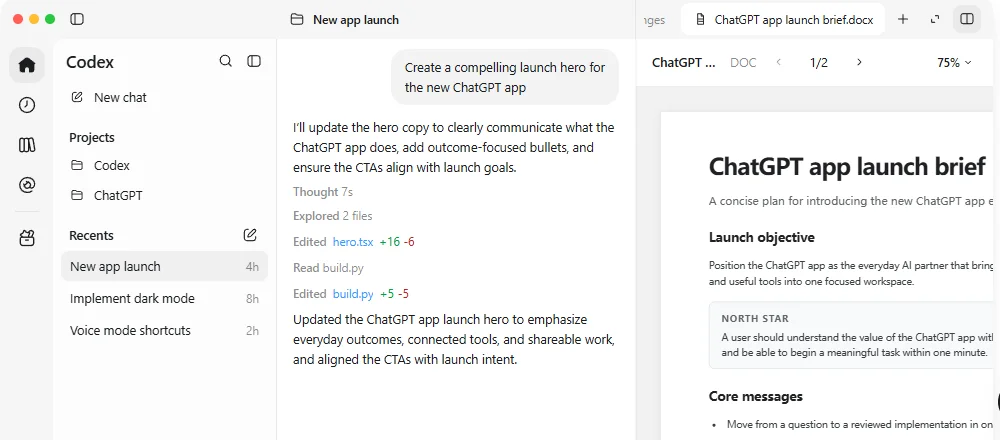
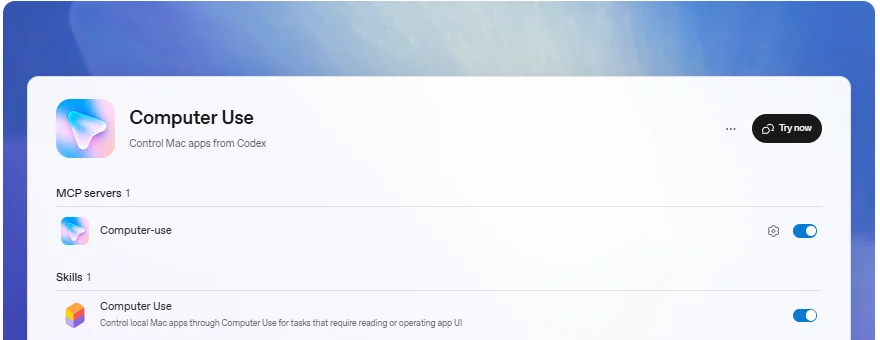

ChatGPT WorkOpenAI
ChatGPT 里专门“把活干完”的模式：能做文档、表格、演示，能操作电脑和浏览器，还有一个 7×24 小时在云端干活的 dot；和 Codex 共用一套引擎和额度。
一页结论
- ChatGPT 的第三种模式：7 月 9 日随新桌面端发布，Chat 负责日常问答，Work 负责多步骤任务和成品交付，Codex 负责软件开发S9S2S14
- 和 Codex 共用底座：执行、隔离和权限机制相同，用量结构相同；12 月起两者共用一个用量池，Simon Willison 形容它“像换了皮的 Codex”S1S2S12S10
- 交付成品文件：可以按模板生成和修改 Word、Excel、PowerPoint 和 Google 文档，并在桌面端旁边预览；Excel 通过插件深度支持S3
- dot：全天候 Agent：基于 GPT-6 Astra，在云端有自己的电脑和浏览器，关机也能干活，10 月起美国 Pro 用户可以发短信给它S4S8
- 起量快，但新形态让老用户困惑：发布两周后与 Codex 合计周活超过 1,000 万；社区对“Chat、Work、Codex 怎么分”的讨论很多S11S14
01公司介绍
02公司战略
OpenAI 用“一个应用、三种模式”把大众用户、知识工作者和开发者都放进 ChatGPT，再用一套额度把它们串起来。
03产品定位
| 项目 | 内容 |
|---|---|
| 一句话定位 | 为较长的多步骤工作和成品交付而设计的 AgentS2 |
| 目标用户 | 知识工作者；企业员工通过 Business / Enterprise 工作区使用S1 |
| 核心场景 | 调研、分析数据、生成文档与演示、跨应用操作、定时任务S6S3 |
| 与 Codex 的分工 | Work 面向成品文件与日常工作，Codex 专注软件开发S2 |

04产品与主要功能
ChatGPT Work 的强项全部集中在“办公与跨应用”一侧；编程相关能力交给同一应用里的 Codex。
产品架构
交互入口
ChatGPT 桌面端（模式切换到 Work）网页与手机（会话可同步）语音Slack / Microsoft Teams 中的 @ChatGPT短信联系 dot（美国 Pro beta）
Agent 能力
Work 多步骤任务dot 全天候 Agent定时任务文件生成与模板Sites 网页发布深度研究
工具与扩展
插件（1,400+）SkillsGoogle 文档 / 表格 / 幻灯片Excel 插件内置浏览器电脑操作插件
运行环境
本地电脑（权限提示）Work Cloud 云端执行dot 的云端电脑与浏览器
安全与管控与 Codex 相同的隔离与权限工作区插件与应用管理额度与超额上限云端 / 本地安全策略
核心功能

图片来自 ChatGPT 官方文档，2026-11-01。
12 项能力评估
05商业模式
Work 不单独收费，包含在 ChatGPT 订阅中，用量结构与 Codex 相同；企业按额度计费。
| 计划 | 月费 | ChatGPT 工作 |
|---|---|---|
| Free | $0 | 仅桌面端有限使用S7 |
| Go | $8 | 仅桌面端有限使用S7 |
| Plus | $20 | 桌面、网页、手机都可用，更高权限S7 |
| Pro | $100 / $200 / $500 | 更长的工作会话、dot、每月 $100～$500 API 额度S7S8 |
| Business / Enterprise | 按席位，可购买额度 | 工作区共享额度池，管理员可设超额上限S7S6 |
企业计费方式：在额度制合同下，Work 的使用从工作区共享额度池中扣除；“消耗已承诺的额度”和“产生新的账单”是两回事，用户限额与工作区超额上限分开设置，提醒不会自动停止消费S6。对企业采购来说，这意味着 Agent 的成本按实际任务量浮动，需要额外的预算管理（分析意见）。
06上下游与渠道
上游：模型与算力
OpenAI 自研 GPT-6 系列Microsoft Azure、Oracle、AMD、Nvidia、AWS 等算力合作S17
ChatGPT Work
桌面、网页、手机，dot，插件生态
渠道
下游客户
个人知识工作者企业员工（按工作区开通）
07市场表现
08用户口碑
以下来自 Hacker News 的高分讨论（C 级来源，只反映社区情绪，不作为事实依据）。
09安全合规
10近期动态
11潜在风险分析意见
| 风险 | 表现 | 可能程度 |
|---|---|---|
| 产品形态混乱 | Chat、Work、Codex 三种模式边界不清，老用户抱怨入口变化S14 | 中 |
| 企业成本不可预测 | 按任务消耗额度，提醒不会自动止损，企业需要额外的预算管控S6 | 中 |
| 电脑操作的安全风险 | Agent 操作本机应用可能改变系统状态，误操作或被诱导的风险需要权限设计兜底S5 | 中 |
| 区域可用性 | dot 首发不含欧洲经济区、瑞士和英国S8 | 低 |
| 与微软的竞合 | Office 插件依赖微软生态，而微软自有 Copilot 并已与其他模型厂商合作（社区讨论）S14 | 中 |
“可能程度”为基于现有公开信息的判断，不是量化预测。
12综合结论分析意见
优势
- ChatGPT 的海量用户入口
- 与 Codex 共用的成熟执行引擎
- 文件交付、电脑操作、插件生态完整
劣势
- 只用 OpenAI 模型
- 产品命名和模式划分让用户困惑
机会
- dot 代表的“常驻 Agent”新形态
- Office 与 Google 办公套件的深度集成
威胁
- Claude Cowork、微软 Copilot 在企业办公场景竞争
- 企业对 Agent 成本与安全的顾虑
对 AI 产品团队的启示
- 一套引擎，多种人群：OpenAI 把编程 Agent 的执行引擎直接复用给办公场景。做 Agent 产品时，底层执行、权限、隔离应当做成可复用的平台能力。
- 交付物比对话更重要：Work 的卖点是“成品文件”和“按模板交付”。办公 Agent 要以用户最终交出去的东西为中心设计。
- 常驻 Agent 是下一种交互：dot 不等用户提问，而是持续推进、主动汇报。产品团队要提前想清楚“Agent 什么时候打扰用户”。
- 模式划分要让用户一眼看懂：入口和命名的混乱会直接变成口碑问题，比功能缺失更伤。
信息缺口
以下信息未找到可靠的公开来源，本报告不做推测。
- ChatGPT Work 单独的用户数、付费数与收入：OpenAI 只披露与 Codex 的合计周活
- 2026 年 2 月之后 ChatGPT 的每周活跃用户数（未找到官方或权威媒体的最新数字）
- Business 与 Enterprise 的席位价格与额度单价
- Word 与 PowerPoint 插件和 ChatGPT Work 的打通程度
来源
A 官方 · B 权威媒体或第三方 · C 社区（仅用于口碑与线索）。访问日期均为 2026-11-01。
- S1 · AChatGPT Work overview（企业版）OpenAI 文档
- S2 · AChatGPT Work and CodexOpenAI 帮助中心
- S3 · ACreating and editing documents, spreadsheets, and presentations with ChatGPT WorkOpenAI 帮助中心
- S4 · AMeet dotsOpenAI 文档
- S5 · AComputer UseOpenAI 文档
- S6 · AChatGPT Work usage and costOpenAI 文档
- S7 · AChatGPT 定价OpenAI
- S8 · AChatGPT release notesOpenAI 帮助中心 · 2026-09 至 2026-10
- S9 · AChatGPT is now a partner for your most ambitious workOpenAI · 2026-07-09
- S10 · BUnderstanding ChatGPT WorkSimon Willison · 2026-08-30
- S11 · BOpenAI's Codex and ChatGPT Work just crossed 10 million weekly usersStartup Fortune · 2026-07
- S12 · BOpenAI Will Make ChatGPT Work and Codex Share One Usage Pool in DecemberStartup Fortune · 2026-10
- S13 · BChatGPT Work: Features, Pricing & Agent ReviewThe Rundown AI · 2026
- S14 · CHacker News 讨论：ChatGPT Work 发布 / Understanding ChatGPT WorkHacker News · 2026-07 至 2026-08
- S15 · COpenAI's ChatGPT surpasses 900 million weekly users, 50 million paying subscribersroic.ai · 2026-02-27
- S16 · AChatGPT desktop appOpenAI 文档
- S17 · BOpenAI（汇总公司公告与媒体报道）Wikipedia